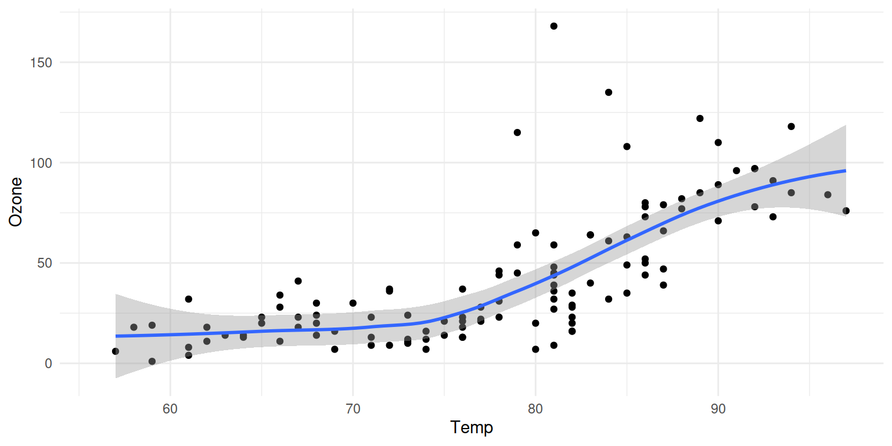

Introduction
The focus of this course is int the programming and basic techniques for inference that are usually applied in data science. We start by reviewing and enforcing programming skills. Then we will use the database of entomological data practice and build the required bases for more structured tools like bootstrap or Jackknife cuts.
Figure 1 further explores the impact of temperature on ozone level.
The tidyverse
We need to install a R package. The majority of the packages that we will use are part of the so-called tidyverse package. The packages in the tidyverse share a common philosophy of data and R programming, and are designed to work together naturally.
You can install the complete tidyverse with the line of code:
then we can use it by loading in the preamble section with
── Attaching packages ─────────────────────────────────────── tidyverse 1.3.2 ──
✔ tibble 3.1.8 ✔ dplyr 1.0.10
✔ tidyr 1.3.0 ✔ stringr 1.5.0
✔ readr 2.1.3 ✔ forcats 0.5.2
✔ purrr 1.0.1
── Conflicts ────────────────────────────────────────── tidyverse_conflicts() ──
✖ dplyr::filter() masks stats::filter()
✖ dplyr::lag() masks stats::lag()see https://www.tidyverse.org/ documentation.